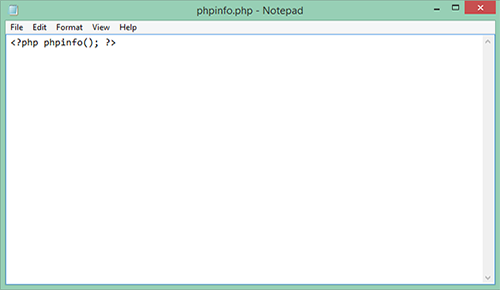
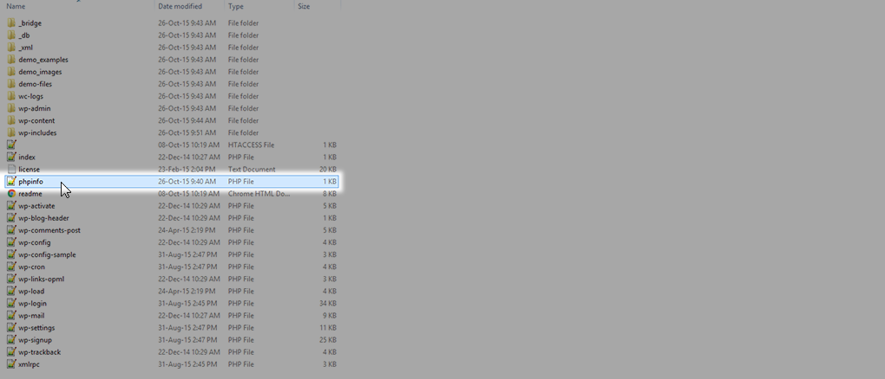
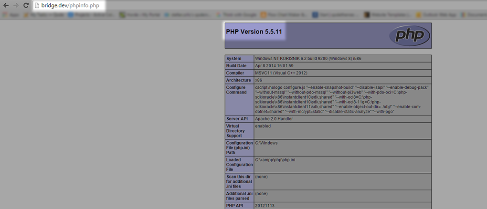

2.1 Server – Recommended Settings / Requirements
To successfully run our theme on your website we recommend a certain PHP and WordPress configuration setting:
PHP 5.3.X OR HIGHER
To check the PHP version running on your server please follow these steps:
01 : Create a simple Text Document file and place the following content in it:

02 : Save the file as phpinfo.php
03 : Using your file manager or FTP client place the file in the WordPress installation folder on your server

04 : Go to your homepage and add ‘/phpinfo.php‘ to your site URL and hit Enter

If your PHP version is lower than 5.3.x please contact your hosting service provider to have them increase the PHP version on your server.
Additionally, you can install and activate WordPress phpinfo() plugin and check your server settings, it can be found in Dasbhoard plugins repository or on this direct link: https://wordpress.org/plugins/wordpress-php-info/
MEMORY LIMIT 64M OR HIGHER (RECOMMENDED 96M)
You can have a closer look at how to increase the PHP memory limit here.
MAX UPLOAD SIZE 35M OR HIGHER
You can have a closer look at how to increase the PHP Max Upload Size here.
OPTIONAL SETTINGS FOR PHP.INI FILE:
- post.max_vars = 5000
- request.max_vars = 5000
- max_execution_time = 300
If you happen to need any assistance when it comes to checking your server configuration, our support team is here to advise you. Also, we recommend referring to your hosting service for more in-depth guidance.
RELATED LINKS
http://php.net/manual/en/security.current.php
https://codex.wordpress.org/Switching_to_PHP5
https://wordpress.org/hosting/
* Hosting providers recommended by the WordPress community
Created with the Personal Edition of HelpNDoc: Create help files for the Qt Help Framework